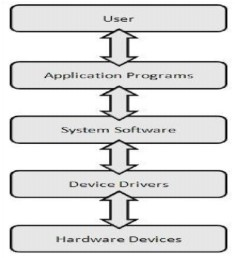

Computer software, or simply software, is a part of a computer system that consists of data or computer instructions, in contrast to the physical hardware from which the system is built.
Software is generally divided into two types: system software that keeps everything working, and application software that allows a user to accomplish some task (even if that task is playing Chess Titan, solitaire or Heart). In this module, we will look primarily at system software. Application software and a third category, malware, will be discussed in following modules.
System software has the task of making your computer a usable system. All application programs work with the system software to accomplish their tasks. System software has three components: the operating system, system utilities (OS helpers), and drivers.
As can be seen at right, the OS interacts with hardware through drivers.

There is a plethora (Large or excessive amount of something) of computer hardware. For example, the number of disk drive models available, even from one manufacturer, can be surprisingly large. When you ask an application to "save" a file, it passes this request to the operating system. Rather than having the OS knows how to accomplish this task with every possible disk drive, it instead knows how to do it for a generic (or virtual) drive. The manufacturer of the disk drive provides a (typically small) program to implement the functionality on their particular hardware, i.e., the small program is the virtual disk drive. That program is called a driver.
An analogy that you may find useful is that the driver acts as a language interpreter. All interactions pass through the driver.
It is Key to note that, although the system you buy has many drivers pre-installed, those programs are provided by the device manufacturer. This is especially important if you are experiencing problems with a device or want to connect an unrecognized device. You will probably have to download a driver from the device manufacturer. That is, you might go to Western Digital for a disk driver, rather than Dell. (Some OEMs provide an easy way to do this, but they are really just redistributing software provided to them.)